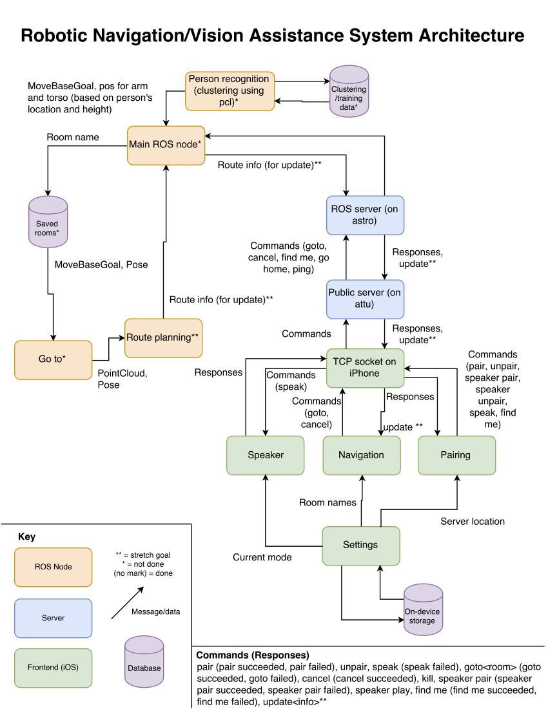

We propose the following project plan:
Goals:
Minimal goals:
- Robot can navigate through hallway without running into things
- Robot can guide a blind person from a start point to an end point
- Robot returns to start point after guiding someone
- iOS app for controlling robot and sending nav goals
- Robot can speak when prompted to make it easier to find
- Attach a handle to the robot to make it easier to hold
- Identify a person in need of assistance (get reasonably close to them)
Stretch goals:
- Robot provides information about next steps during route
- Robot can touch a person after identifying them
- Robot adjusts arm and torso height to match identified person's height
- Robot can notify person if door is closed when they arrive and guide to handle
System Architecture Diagram
(Click for fullview)
Three-Week Plan:
Week 1:
- Connect iOS app to Python server
- Basic interface for iOS app done
- Hallway map and python driver for robot done
- 3D printed handle done
- Start on recognizing/moving to humans in need of assistance
Week 2:
- Connect speakers to robot
- Human recognition / human-robot pairing done
- Start work on speaking scene info
- Start work on door recognition (if time allows)
Week 3:
- Finish things we got behind on from first 2 weeks
- Test